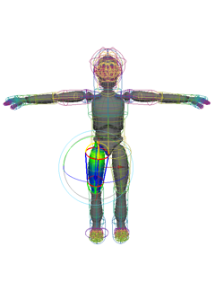

此工具是交互式平滑蒙皮工作流的一部分，涵盖了“交互式蒙皮绑定工具”(Interactive Skin Binding Tool)中的选项。有关如何使用“交互式蒙皮绑定工具”(Interactive Skin Binding Tool)绑定蒙皮的信息，请参见使用交互式绑定进行平滑蒙皮。
选择“交互式蒙皮绑定工具”(Interactive Skin Bind Tool)
- 选择 >

影响区域
“交互式蒙皮绑定工具”(Interactive Skin Binding Tool)的顶部区域包括与“绘制蒙皮权重工具”(Paint Skin Weights Tool)中相同的“影响”(Influences)列表和“排序”(Sort)选项。请参见影响区域。
反射设置(Reflection Settings)
- 反射(Reflection)
-
启用或禁用操纵器反射。启用时，修改网格一侧的操纵器也会修改另一侧对应的操纵器。反射的操纵器显示为红色的模板操纵器对象。在下面的示例图像中，修改左肩的操纵器也会显示和修改右肩的操纵器。
- 反射空间(Reflection space)
-
选择“世界”(World)或“对象”(Object)。
- 反射轴(Reflection axis)
-
选择沿哪个轴反射更改。默认值为 X。
- 容差(Tolerance)
-
默认值为 0.1。
蒙皮绑定设置
- 衰减曲线(Falloff Curve)
-
可在操纵器的边为权重定义衰减曲线的图形。
- 曲线预设(Curve presets)
-
从五个预定义“衰减曲线”(Falloff curve)图形中选择。
显示(Display)
设置默认显示的操纵器。从下列选项中选择：
- 无(None)
-
只显示选定影响上的操纵器。
- 相邻(Neighboring)
-
显示选定影响的操纵器，以及相邻影响的线框操纵器。
- 全部(All)
-
显示所有影响的线框操纵器。如果该“显示”(Display)模式处于启用状态，则可以使用行进式拾取热键选择操纵器。每个线框操纵器显示与其各自影响相同的颜色。

显示权重(Display Weights)
使用交互式绑定时，会将 skinCluster 的“归一化权重”(Normalize Weights)模式自动设置为“后期”(Post)归一化。这意味着调整操纵器以设置初始权重后，不会归一化权重，除非变形网格。有关“后期”(Post)归一化的详细信息，请参见归一化权重模式。
如果使用交互式绑定时无法更改“归一化权重”(Normalize Weights)模式，则通过“显示权重”(Display Weights)选项可选择调整操纵器时是否查看网格上的归一化权重反馈。
从下列选项中进行选择：
- 选择(Selection)
-
在未归一化的情况下，显示网格上选定操纵器的权重值。（使用骨架变形网格时仍会归一化权重。）
- 归一化(Normalized)
-
在网格上显示归一化权重值反馈。
- 反馈颜色(Feedback color)
-
使用该颜色渐变来定义操纵器反馈颜色。
- 颜色(Color)
-
单击可打开“颜色选择器”(Color Chooser)窗口，并为“反馈颜色”(Feedback color)渐变的选定部位设置新的颜色。
- 颜色预设(Color presets)
-
从三个预定义“反馈颜色”(Feedback color)渐变选项中进行选择。